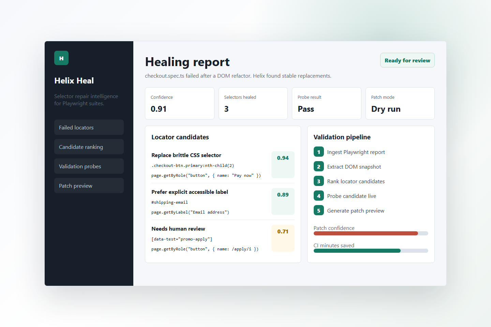

Repair Confidence
0.85+
auto-ready threshold for confident locator replacements
Self-healing Playwright operations
A local-first repair layer for teams who need broken locators fixed with evidence, confidence, and reviewable patches after a failed CI run.
auto-ready threshold for confident locator replacements
maintenance drag targeted by the MVP painkiller
review first with optional automation after validation
no lock-in with report, cache, and trace evidence on disk
Playwright JSON, failed tests, retries, attachments
Accessibility-first selector generation
Static plus live uniqueness checks
AST-safe diff suggestions for review
Readable repair summary where developers work
Confidence, reasoning, and patch output

No matching Helix module found.
Playwright CI turns red and saves the report, trace, and source context.
Helix extracts locator evidence and ranks safer replacements.
Candidate selectors are checked for uniqueness and actionability.
Developers receive a dry-run diff and PR comment with confidence signals.
Install Flow
Helix stays easy to evaluate from source today: no hosted account, no vendor lock-in, and no framework migration before the first repair suggestion.
git clone https://github.com/martjustin/helix-heal.git
cd helix-heal
npm install
npm run build
npm exec --workspace helix-heal -- helix-heal analyze \
--report playwright-report.json \
--trace test-results \
--source-root .
npm exec --workspace helix-heal -- helix-heal patch --dry-run \
--report playwright-report.json \
--trace test-results \
--source-root .CI Handoff
The action is designed to run only after failure, preserving CI speed while turning breakage into a focused, developer-readable next step.
- name: Run Playwright
id: playwright
run: npx playwright test --reporter=json
continue-on-error: true
- uses: martjustin/helix-heal@main
if: steps.playwright.outcome == 'failure'
with:
playwright-report: playwright-report.json
trace: test-results
source-root: .